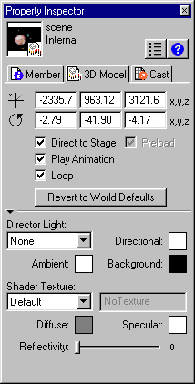

What's New in Director 8.5 > 3D Basics > Using the Property Inspector for 3D
What's New in Director 8.5 > 3D Basics > Using the Property Inspector for 3D |
Using the Property Inspector for 3D
The Property Inspector lets you modify the 3D cast member without using Lingo. The 3D Model tab of the Property Inspector offers a simple way to view and control numerous aspects of the 3D world.
To view the 3D Model tab:
1 |
Open the Cast window if it isn't already open. |
2 |
Click the 3D cast member you wish to select. |
3 |
Click the Property Inspector button in the toolbar. The Property Inspector opens. |
4 |
Click the 3D Model tab in the Property Inspector. |
The Property Inspector should appear in Graphical view. If the Property Inspector is in List view, click the List View Mode icon to toggle the view to Graphical.

The Property Inspector's 3D Model tab provides several options:
The fields at the top of the tab show the initial position and orientation of the default camera. The default (0, 0, 0) represents a vantage point looking up the Z axis through the middle of the screen. The values you enter in these fields replace the displayed values and move the camera. |
|
The Direct to Stage option controls whether rendering occurs directly on the Stage (the default) or in Director's offscreen buffer.The offscreen graphics buffer is where Director calculates which sprites are partly hidden behind other sprites.When Direct to Stage is on, Director bypasses its offscreen buffer and saves time, increasing playback speed. When Direct to Stage is on, however, you can't use the inker modifier on 3D models or place other sprites on top of the 3D sprite. |
|
The Preload option controls how media that's being downloaded to the user's computer is displayed. The media can be held back from display until it has been completely streamed into memory, or it can be displayed progressively on the Stage as data becomes available. |
|
The Play Animation option controls whether any existing animation, either bones or keyframe, is played or ignored. |
|
The Loop option controls whether the animation loops continuously or plays once and stops. |
|
The Director Light area allows you to choose one of ten lighting positions to apply to a single directional light. You can also adjust the color for the ambient light. (Directional light comes from a particular, recognizable direction; ambient light is diffuse light illuminating the entire scene.) Finally, you can adjust the background color of the scene. |
|
The Shader Texture area allows you to work with shaders and textures. A shader determines the method used to render the surface of a model; a texture is an image applied to the shader and drawn on the surface of the model. Using the Property Inspector, you can assign a texture to a shader. You can also control its specular (highlight) color, its diffuse (overall) color, and its reflectivity. For more information, see The 3D world and Working with models and model resources overview. |